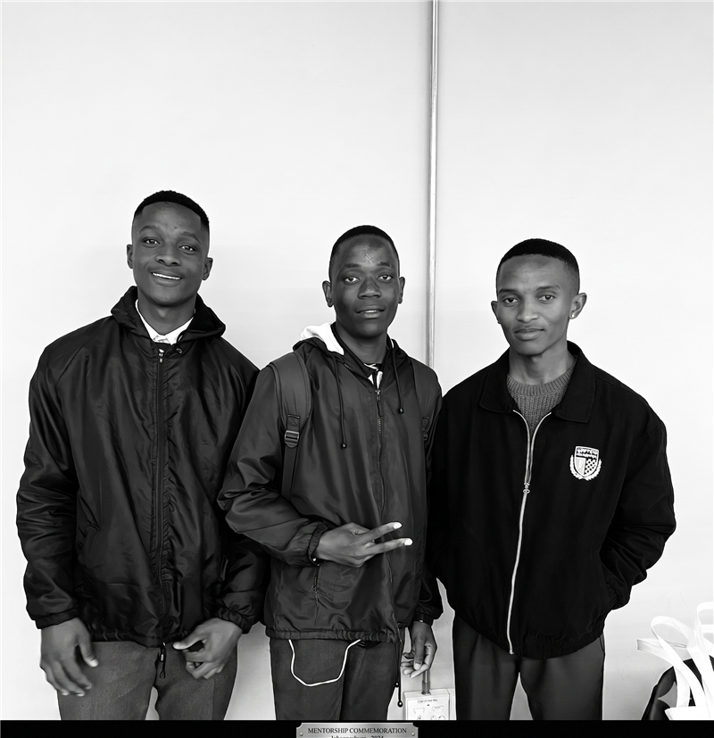
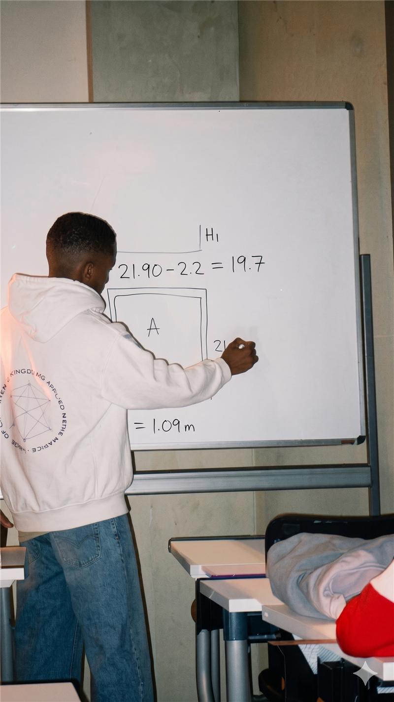

|
Bachelor of Science (Construction) at Wits & Data Analytics specialist bridging the gap between site execution and digital strategy.
Latest Project
About
Who I am.



The Motive
I realized early on that the construction industry is brilliant at executing complex builds, but often struggles with the data side of things—tracking, predicting, and optimizing. That's why I decided to bridge the gap. I combined my background in Construction (BSc at Wits) with Data Analytics and Engineering. I don't just want to build structures; I want to build the data pipelines and visualizations that make building them more efficient, cost-effective, and smart.
Education
- Bachelor of Science (Construction) — Wits University
- Data Engineering & Analytics — ALX Africa Academy
Timeline
Projects
Selected work.
Certifications
Credentials & learning paths.
just a construction guy obsessed with data, trying to build smart systems without losing his mind.
Highly recommend checking out StudyPulse — my AI-integrated study timer to stop you from studying blindly.
Contact
Let's connect through any of these platforms.